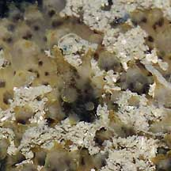
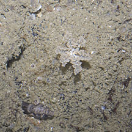
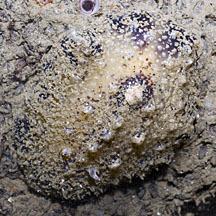
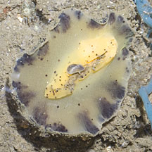
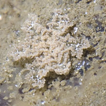
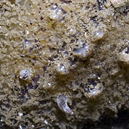
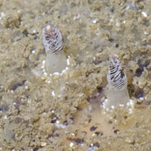

|
|
| nudibranchs text index | photo index |
| Phylum Mollusca > Class Gastropoda > sea slugs > Order Nudibranchia |
| Yellow-foot nudibranch Thordisa villosa Family Discodorididae updated May 2020 Where seen? This rather boring but large nudibranch is sometimes seen on our Northern shores among coral rubble and rocky shores. Sometimes covered in a thin layer of silt. It appears to be seasonally common. Features: 4-8cm long. The upperside of the broad hard body looks like coral rubble in colour and texture. Body yellow with a characteristic pattern of dark brown patches around the mantle edge. It is covered with bumps and some of the larger tapering finger-like structures (papillae) may be filled with fluid. The underside and small foot is yellow with brown or black spots. The body doesn't fall apart when handled. Tiny rhinophores and small feathery gills. What does it eat? It eats sponges. |
 Chek Jawa, May 05 |
 Tapering papillae on the body. |
 Underside. |
|
 Punggol, Jun 12 |
 |
 |
|
 Small feathery gills. |
 Larger bumps are filled with fluid. |
 Rhinophores. |
| Yellow-foot nudibranchs on Singapore shores |
On wildsingapore
flickr
|
| Other sightings on Singapore shores |
Links
References
|